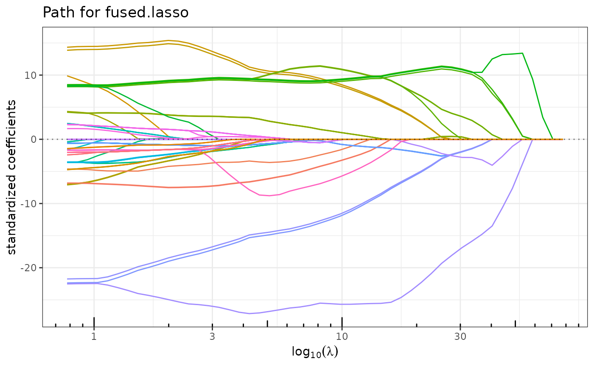
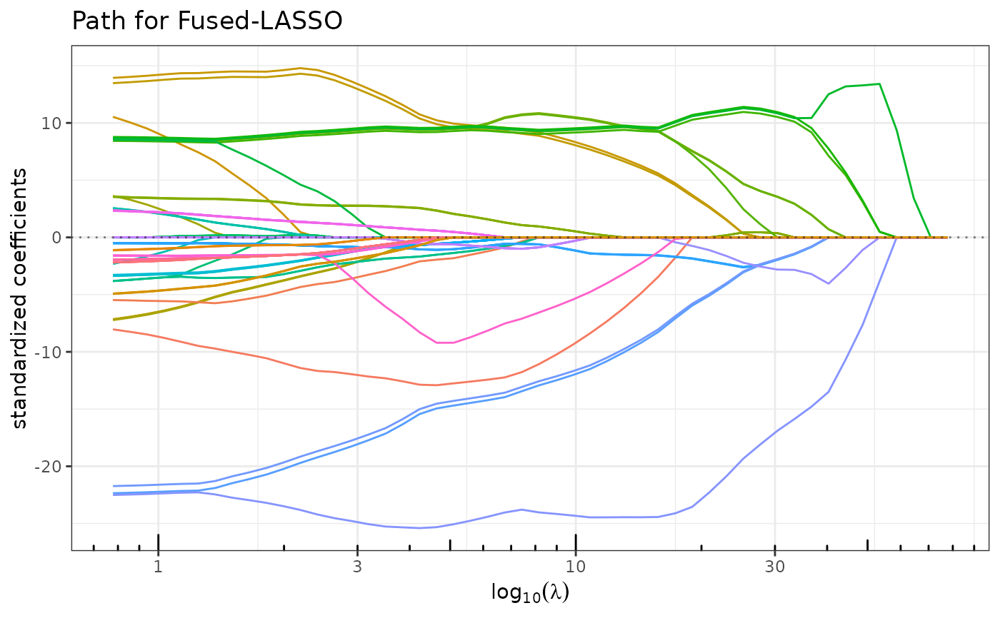

This function fits the standard version of the fused lasso.
It can take a general matrix x and allows for possible weights on the
lambda1 and lambda2 penalties.
Usage
fused_lasso(
x,
y,
lambda1 = NULL,
lambda2 = 1,
pen_fused = c("L1", "L2", "Huber"),
penscale = rep(1, ncol(x)),
struct = NULL,
intercept = TRUE,
normalize = TRUE,
nlambda1 = ifelse(is.null(lambda1), 50, length(lambda1)),
minratio = 0.01,
maxfeat = ifelse(lambda2 < 1, min(nrow(x), ncol(x)), min(2 * nrow(x), ncol(x))),
beta0 = rep(0, ncol(x)),
control = list()
)Arguments
- x
matrix of features, possibly sparsely encoded (experimental). Do NOT include intercept. When normalized is
TRUE, coefficients will then be rescaled to the original scale.- y
response vector.
- lambda1
sequence of decreasing \(\ell_1\)-penalty levels. If
NULL(the default), a vector is generated withnlambda1entries, starting from a guessed levellambda1.maxwhere only the intercept is included, then shrunken tominratio*lambda1.max.- lambda2
real scalar; tunes the \(\ell_2\) penalty in the Elastic-net. Default is 0.01. Set to 0 to recover the Lasso.
- pen_fused
penalty used for fusing the variables (either L1, L2 or Huber). Default is L1
- penscale
vector with real positive values that weight the penalty of each feature. Default sets all weights to 1.
- struct
Description of the graph that corresponds to the
lambda2penalty structure. IfNULL(the default) a chain graph is assumed, like in the standard fused-lasso. If a matrix is given, interpreted as a symmetric adjacency matrix- intercept
logical; indicates if an intercept should be included in the model. Default is
TRUE.- normalize
logical; indicates if variables should be normalized to have unit L2 norm before fitting. Default is
TRUE.- nlambda1
integer that indicates the number of values to put in the
lambda1vector. Ignored iflambda1is provided.- minratio
minimal value of \(\ell_1\)-part of the penalty that will be tried, as a fraction of the maximal
lambda1value. A too small value might lead to instability at the end of the solution path corresponding to smalllambda1combined with \(\lambda_2=0\). The default value tries to avoid this, adapting to the '\(n<p\)' context. Ignored iflambda1is provided.- maxfeat
integer; limits the number of features ever to enter the model; i.e., non-zero coefficients for the Elastic-net: the algorithm stops if this number is exceeded and
lambda1is cut at the corresponding level. Default ismin(nrow(x),ncol(x))for smalllambda2(<0.01) andmin(4*nrow(x),ncol(x))otherwise. Use with care, as it considerably changes the computation time.- beta0
a starting point for the vector of parameter. By default, will initialized zero. May save time in some situation.
- control
list of argument controlling low level options of the algorithm:
verbose: logical; verbose modetimer: logical; use to record the timing of the algorithm. Default isFALSE.maxiterinMaximum number of iterations in the inner loop to run.maxiteroutMaximum number of iterations in the outer loop to run.maxactivationMaximum number of previously inactive variables to activate at the same timeaccuracyAccuracy at which the algorithm will stop.fusioncheckShould the fused sets be checked for separation?verboseShould the function give some output what it is doing?
Value
an object with class FusedLassoFit, inheriting from QuadrupenFit.
Details
The optimized criterion is the following:
penscale argument. The \(\ell_1\) fusion penalty
is structured by a possibly weighted graph \(G\) provided via the struct
argument, as a symmetric (undirected) adjacency matrix.
Examples
beta <- rep(c(0,1,0,-1,0), c(25,10,25,10,25))
cor <- 0.75
Soo <- toeplitz(cor^(0:(25-1))) ## Toeplitz correlation for irrelevant variables
Sww <- matrix(cor,10,10) ## bloc correlation between active variables
Sigma <- Matrix::bdiag(Soo,Sww,Soo,Sww,Soo)
diag(Sigma) <- 1
n <- 50
x <- as.matrix(matrix(rnorm(95*n),n,95) %*% chol(Sigma))
y <- 10 + x %*% beta + rnorm(n,0,10)
res <- fused_lasso(x, y, lambda2=5)
G <- igraph::make_ring(ncol(x)) |> igraph::as_adjacency_matrix(sparse = FALSE)
resG <- fused_lasso(x, y, lambda2=5, struct = G)
plot(res)

plot(resG)
